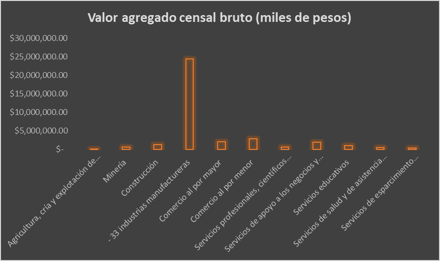
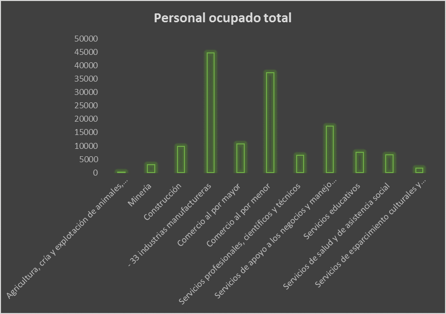
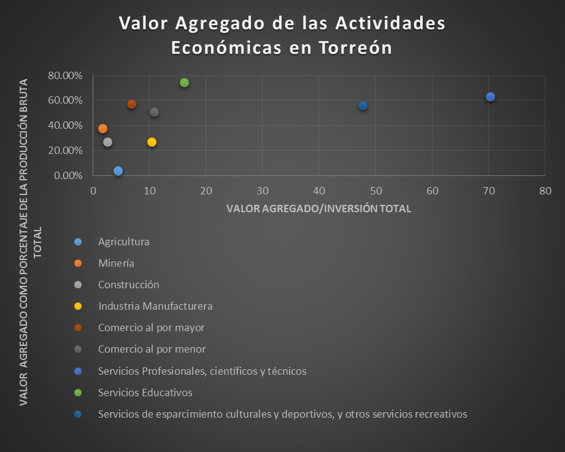

Con ayuda de la tecnología, la economía se ha mantenido en constante cambio a través del tiempo. El primer gran cambio fue con la revolución industrial en el siglo XVIII, ya que permitió la transición de una economía basada en actividades primarias como la agricultura y la extracción a una basada en la transformación, lo cual aporta mucho mayor valor a la economía. Fue entonces que las grandes potencias comenzaron a modernizarse, y a dejar atrás a otros países basados aun en la agricultura.
Hoy en día, los productos y servicios tecnológicos y de conocimiento han superado a la manufactura en la creación de valor, por lo que cada vez más países basan sus economías en productos y servicios tecnológicos de alto valor agregado. De hecho, en 2011 la mayoría de los países de la OCDE ya obtenía el 60% de su valor agregado bruto en actividades económicas de servicios. En contraste, en 2009 la economía de México aún generaba el 58.10% de su valor agregado a partir de actividades económicas de extracción y manufactura. El dato es preocupante, pues a este paso no podremos cerrar la brecha que nos separa de los países desarrollados, al contrario, seguiremos sirviéndoles de peldaño con la exportación de productos intermedios de poco valor y la importación de productos finales generadores de valor para las potencias.
Ya en este contexto, analizando al municipio de Torreón encontramos que la contribución de los servicios a la economía es muy pequeña en comparación con la industria manufacturera, lo cual nos indica que Torreón, al igual que México, aun basa su economía en el sector secundario. Los porcentajes de participación en el valor agregado de Torreón así como la distribución del empleo por actividad económica para el último año censal aparecen abajo en los gráficos A y B:
Gráfico A

Fuente: INEGI. Censos Económicos 2009.
Gráfico B

Fuente: INEGI. Censos Económicos 2009.
Como se observa en el gráfico A, la industria manufacturera aportó en 2009 el 63% del valor agregado del municipio, mientras que los servicios, en conjunto, aportaron 15%. Además, como es de esperarse, la mayoría de los empleos son también generados por ésta, dando empleo al 26% del personal ocupado. Por otro lado, el comercio al por menor y el conjunto de servicios emplean al 21 y 30 por ciento del personal, respectivamente.
Sin embargo, aun cuando la Industria genera un gran número de empleos, eso no significa que brinde los mejores salarios y oportunidades para el personal. Un estudio realizado por FOMEC en 2012 revela que el personal mejor pagado en La Laguna es el perteneciente al área de investigación y desarrollo, seguido por el área de las TICs (Tecnologías de Información y Comunicación) con salarios promedio de $ 25,968.42 y $ 21,127.78 mensuales respectivamente. En contraste, el salario recibido por el personal del área industrial es de tan sólo $ 14, 540.06. Esta diferencia en las retribuciones es una muestra de cómo se traduce el valor en la sociedad.
¿En realidad generan más valor las actividades tecnológicas y de servicios?
Según datos del último censo económico realizado por INEGI, de la producción bruta total de servicios profesionales, científicos y técnicos en el país, el 56.67% es valor agregado, en cambio el valor generado por la manufactura representa sólo un 30.36% de su producción. Además, la inversión total realizada en las actividades económicas de servicios es menor a la realizada en la manufactura y presenta un mejor rendimiento: por cada peso invertido en la industria manufacturera, se obtienen aproximadamente 12.51 pesos en valor agregado, contra 33.49 obtenidos por un peso invertido en la actividad económica de servicios profesionales, científicos y técnicos.
En cuanto al municipio de Torreón, los sectores de mayor valor agregado son también los pertenecientes al sector terciario, más específicamente las actividades de servicios educativos, servicios culturales y servicios profesionales y técnicos, los cuales, cabe resaltar, pertenecen a la nueva economía del conocimiento. En el diagrama de dispersión mostrado abajo, se encuentran las actividades económicas del municipio, ubicadas según su rentabilidad y su valor agregado como porcentaje de su producción.

Fuente: INEGI. Censos Económicos 2009.
En el eje horizontal de la gráfica se mide la “rentabilidad” de las actividades económicas, en otras palabras, indica cuántos pesos se generan por cada peso invertido en la actividad económica correspondiente. Por ejemplo, en el caso de Torreón, los servicios profesionales, científicos y técnicos son los más rentables, pues por cada peso invertido en ellos se obtienen 70 pesos de valor agregado. Por su parte, el eje vertical nos indica el porcentaje de valor generado por cada actividad económica con respecto a su producción bruta total: en este caso los servicios educativos tienen el primer lugar en generación de valor, al añadir a la economía el 74% del valor de su producción.
Cabe resaltar la ubicación que ocupan en la gráfica las actividades primarias y secundarias como la agricultura, la construcción y la manufactura, siendo las que aportan menor valor agregado; la minería, por otro lado, se separa un poco del resto, aportando como valor casi el 40% de su producción.
La intención de mostrar la rentabilidad de las actividades no es abandonar la agricultura y la transformación para dedicarnos enteramente al comercio y los servicios, sino el añadir a estas actividades procesos de innovación que de verdad enriquezcan a nuestra sociedad, y para lograrlo, necesitamos invertir en tecnología, centros de investigación y desarrollo, educación y cultura, pues si nuestros profesionistas y técnicos no están preparados con los conocimientos y habilidades que una economía competitiva necesita, nunca podremos estar a la altura de las ciudades globalmente competitivas y peor aún si generamos el capital humano más no las condiciones para que se desarrollen en nuestra ciudad.